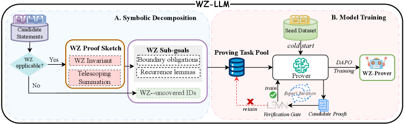

WZ-LLM turns Wilf-Zeilberger plans into Lean 4 proof sketches discharged by an LLM prover.
Abstract
Automating formal proofs of combinatorial identities is challenging for LLM-based provers, as long-horizon proof planning is required and unconstrained search quickly explodes. Symbolic methods such as the Wilf-Zeilberger (WZ) method can achieve a mechanized proof of combinatorial identities by constructing special auxiliary functions and demonstrating that they satisfy specific recurrence relations. We propose WZ-LLM, a neuro-symbolic framework that turns WZ proof plans into executable proof sketches in Lean 4 and uses an LLM-based prover to discharge the resulting machine-checkable subgoals. We also train a dedicated WZ-Prover via a Lean-kernel-verified bootstrapping loop with expert-verified iteration, followed by DAPO-based refinement. Experiments show that WZ-LLM achieves a 34% proof success rate on LCI-Test (100 classic combinatorial identities), outperforming strong baselines such as DeepSeek-V3 and Goedel-Prover-V2, and delivering consistent gains on CombiBench and PutnamBench-Comb. These results indicate that our framework provides two complementary strengths: improved direct proving for identities beyond the scope of WZ, and substantially higher end-to-end success when WZ sketches guide a specialized prover.
Problem
Automating formal proofs of combinatorial identities in Lean 4 is difficult for LLM-based provers because long-horizon proof planning is required and unconstrained search quickly explodes. Data scarcity and the complexity of boundary conditions further limit existing methods.
Approach
The authors propose WZ-LLM, a neuro-symbolic framework that translates Wilf-Zeilberger (WZ) proof plans into executable proof sketches in Lean 4 and uses an LLM-based prover to discharge the resulting machine-checkable subgoals. The system constructs WZ certificates, decomposes identities into structured obligations (recurrence verification, boundary conditions, initial values), and compiles them into Lean proof sketches. A dedicated WZ-Prover is trained via a Lean-kernel-verified bootstrapping loop with expert-verified iteration, followed by DAPO-based reinforcement learning refinement.

Figure 1 : Overview of WZ-LLM. (A) Symbolic decomposition. Given combinatorial-identity statements, the symbolic engine checks WZ applicability and, when applicable, constructs a WZ proof sketch that is decomposed into sub-goals. Statements that are not amenable to the WZ method are labeled as WZ-uncovered targets. All sub-goals and uncovered targets form a shared pool of proving tasks. (B) Model
Results
WZ-LLM achieves a 34% proof success rate on LCI-Test (100 classic combinatorial identities) at pass@32, outperforming DeepSeek-V3 (1/100), Goedel-Prover-V2 (9/100), DeepSeek-Prover-V2 (6/100), and Kimina-Prover-Distill (6/100). The WZ-Prover alone solves 29/46 WZ-applicable identities via sketch guidance, and 5 additional WZ-uncovered identities are proved directly.